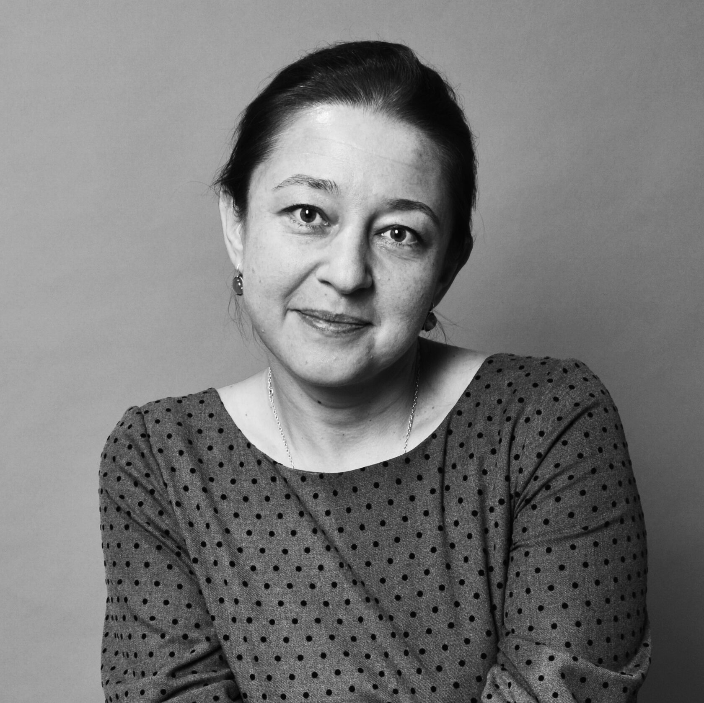
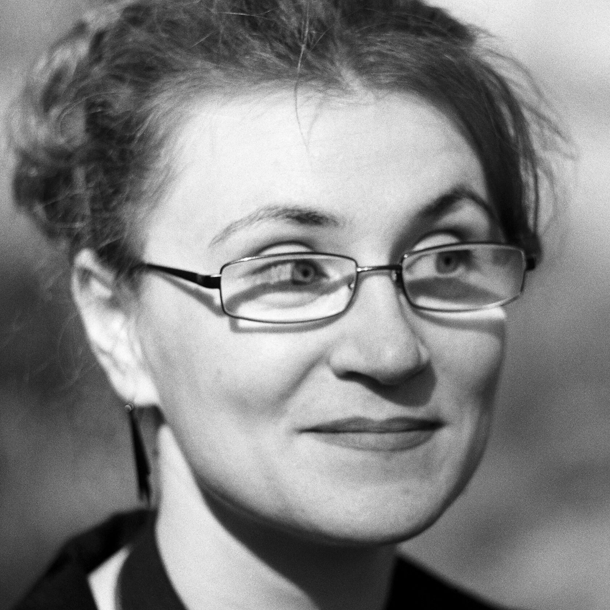
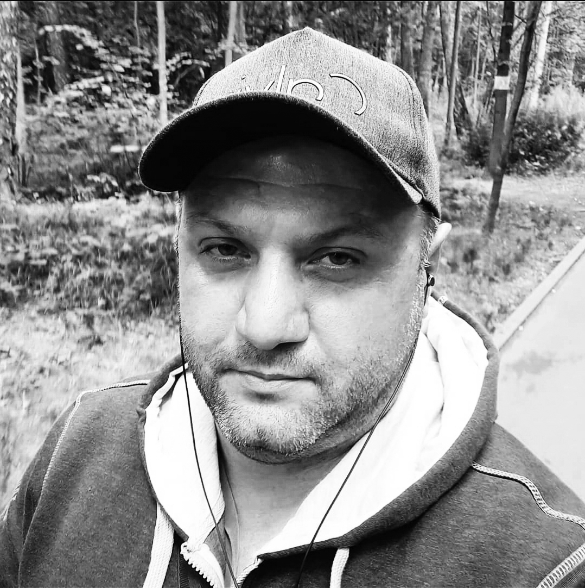

11/06 - 14/06
Калуга, Октябрьская 17а
Калуга, Октябрьская 17а


Философия фестиваля «Млечный Путь»
Космос всегда остается загадочным и притягательным для человека. Глядя в темное небо, мы мечтаем и любим, философствуем и придумываем. «Млечный Путь» - как раз об этом. О загадочности, о хрупкости, о моменте, о красоте, о человеке, о его месте в этой Вселенной.
Участники
Андрианова Анна
Россия, Москва. Художник-керамист

Родилась в 1977 г. в г. Хотьково, Московская область. В 1997 году окончила Абрамцевский художественно-промышленный колледж им. В.М. Васнецова, отделение художественная керамика. В 2001 году окончила Московский государственный педагогический университет.
1999-2009 год - преподаватель АХПК им. В. М. Васнецова, 2005-2011 гг. -научный сотрудник музея-заповедника "Абрамцево". С 2010 года - член Сергиево-Посадского
Базлова Екатерина
Россия, Москва. Художник-керамист

Родилась 18 мая 1976 года в г. Калининграде. Закончила с отличием отделение художественной керамики АХПК им. Васнецова в 1998 г. Закончила МГОПУ им. Шолохова по специальности «Декоративно-прикладное искусство и народные промыслы».
Член СХР с 2007г., член МСХ с 2013г. Диплом МСХ 27-ой выставки молодых художников Москвы 2003г., диплом СХР выставки молодые художники России 2007г., диплом СХР выставки «Россия XI» 2009г., государственная стипендия 2009г., диплом СХР 2015, 2019гг.
Балбабян Григор

Родился в г.Ереване 1976 г. Заниматься керамикой начал в 1997 году. Фотографируя работы друзей, сам загорелся изяществом пластики керамики. С тех пор не перестает удивляться и восхищаться этим видом искусства.
Кредо: Гончарю с удовольствием, тем более это особая медитация, которая воспитывает характер и открывает новые горизонты